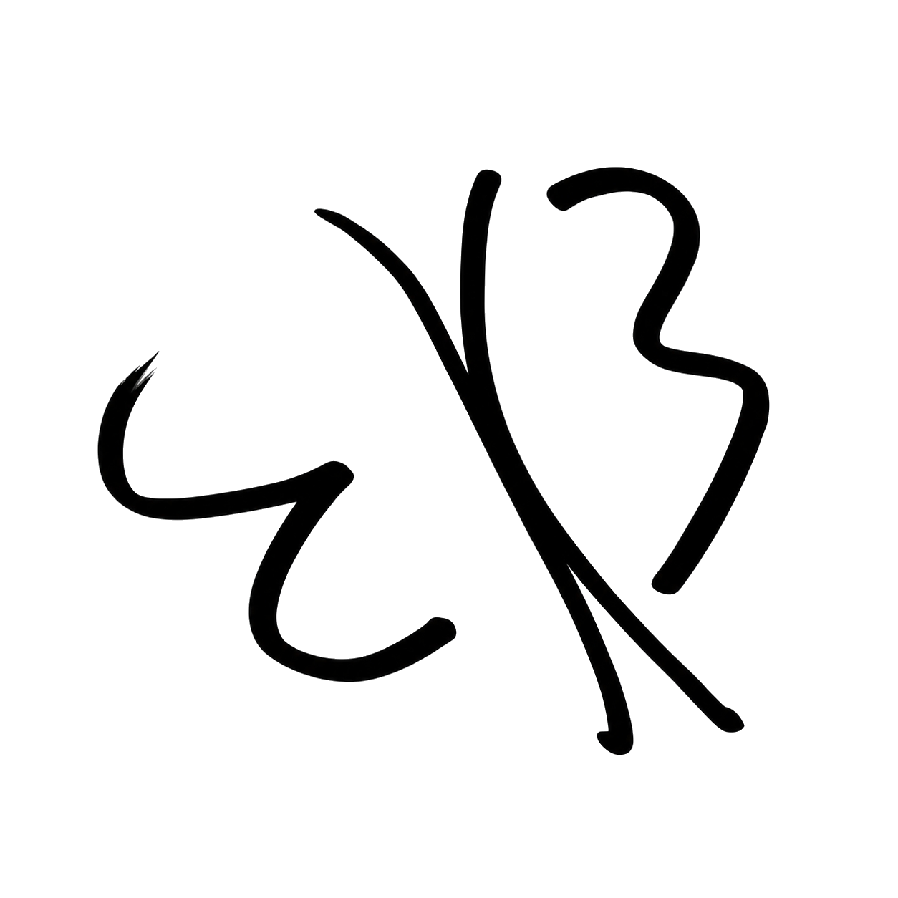

连接你的 Being，继续对话。
连接这台电脑，供 Being 使用文件、命令和工具。
启动 Portal 后，连接与工具运行状态会显示在这里。
启用后台服务后，登录系统即连接 Being，退出客户端后继续运行。
输入关键词查找已加载的提问
用 Being 名和 6 位配对码连接，直接查看篝火、围炉和私信。
首次向你的 Being 获取配对码。完成配对后，在此客户端直接读取内容，无需再让 Being 在对话中查询。凭据加密保存在本机，配对码不会保存。
这里接受 Town 凭据，不是 Loom 对话链接中的 token。
粘贴完整的 Loom 链接。凭据加密保存在系统密钥库支持的本地配置中。
默认使用随客户端附带的 Rust 引擎，也可以选择已有的 heart-portal。